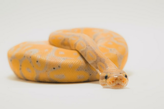

Ping's Pet Shop
Ping's Pet Shop on Turussa vuodenvaihteessa ovensa avannut lemmikki- ja eläintentarviteliike.
Olemme erikoistuneet jyrsijöiden, kalojen ja terrarioeläinten myyntiin.
Meiltä löydät myös tarvikkeet ja ruoat lemmikeillesi, myös kissoille ja koirille.
Valikoimastamme löydät myös ruokahyönteisiä.
Palveluihimme kuuluu kynsien leikkauspalvelu koirille, marsuille ja kaneille.
Lisäksi meille on mahdollista tuoda lemmikkisi lomahoitoon.
Lue lisää palveluistamme.

Aukioloajat:
Ma-Pe: 10:00-18:00
La: 11:00-21:00
Su 11:00-18:00
Yhteystiedot:
Puhelinnumero: +3581234567
S-posti: pingspetshop@contactus.fi